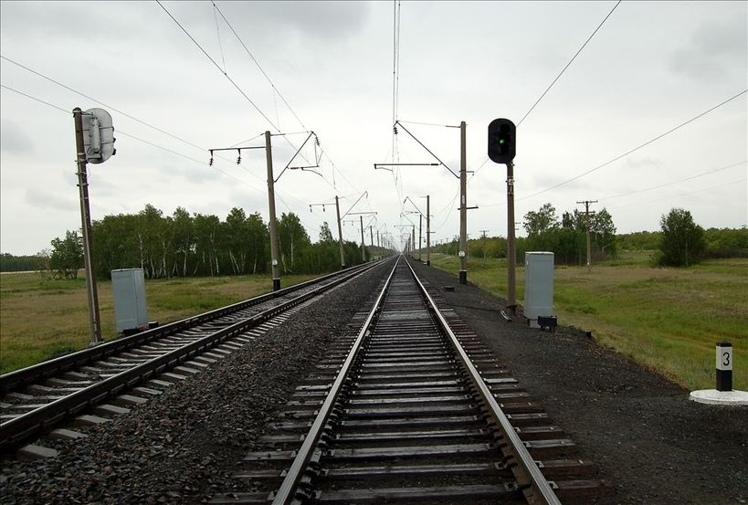
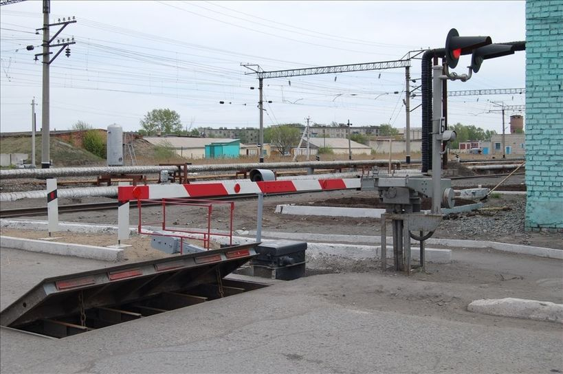

22 сентября 2003 г. подписано Постановление Правительства РФ № 585 от 18.09.2003 г. о создании открытого акционерного общества «Российские железные дороги» (ОАО «РЖД»).
С 1 октября компания начала хозяйственную деятельность.
ОАО «РЖД» – одна из крупнейших транспортных компаний в мире. Российские железные дороги занимают первое место в мире по протяженности электрифицированных линий (43,8 тыс. км) и второе – по эксплуатационной длине железных дорог (85,6 тыс. км).
ОАО «РЖД» владеет 100% железнодорожных магистралей в России, осуществляет почти 80% железнодорожных перевозок, перевозит свыше 1 млрд пассажиров и свыше 1 млрд тонн грузов в год.
1 октября 2023 года компания «РЖД» отметила знаменательную дату – 20 лет со дня создания акционерного общества.
Область профессиональной деятельности выпускников: построение и эксплуатация устройств и систем сигнализации, централизации и блокировки (далее — СЦБ) и железнодорожной автоматики и телемеханики (далее — ЖАТ); техническое обслуживание, ремонт, монтаж и пуско-наладочные работы устройств и систем СЦБ и ЖАТ; ремонт, регулировка и испытание приборов, блоков и устройств аппаратуры СЦБ и ЖАТ.


Объектами профессиональной деятельности выпускников являются:
— перегонные системы железнодорожной автоматики и телемеханики;
— станционные системы железнодорожной автоматики и телемеханики;
— технология обслуживания устройств СЦБ и систем ЖАТ;
— микропроцессорные и диагностические системы железнодорожной автоматики;
— приборы и устройства СЦБ, ЖАТ;
— техническая документация;
— первичные трудовые коллективы.
Техник готовится к следующим видам деятельности:
— Построение и эксплуатация станционных, перегонных, микропроцессорных и диагностических систем железнодорожной автоматики.
— Техническое обслуживание устройств систем СЦБ и ЖАТ.
— Организация и проведение ремонта и регулировки устройств и приборов систем СЦБ и ЖАТ.
— Выполнение работ по одной или нескольким профессиям рабочих, должностям служащих (приложение к ФГОС СПО).
Так как лично я учусь на профессию "Автоматика и телемеханика на транспорте", я учавствую в разных конкурсах и коныеренциях, и ниже я привел пример одной из своих работ